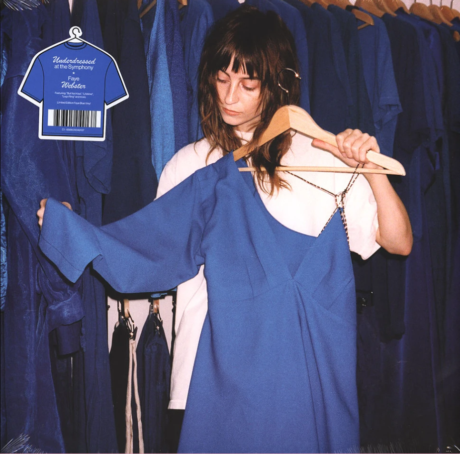

My Favorite Games
My Favorite Artists
Laufey is an Icelandic artist who incorporates jazz and pop together. One of my favorite songs of hers blends these two amazing genres beautifully.

Faye Webster is originally from Atlanta. One reason I enjoy her music is that she incorporates country and pop together. Her voice is unique. One of my favorite albums of hers is Car Therapy.
The Marías are a band known for their smooth blend of indie pop, soul, and jazz, creating dreamy and romantic soundscapes.